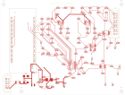
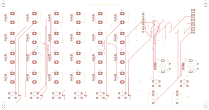

Питание
Выберите узел выше для просмотра цепи и ограничений проверки.
Фиксированная глубина · до 36 связей · ↑↓←→ и Пробел
Расчёт входного тракта использует номиналы схемы R1. Устойчивость к ±15 В и поведение при выключенном питании требуют измерений.
Схемы KiCad, разводка двух плат и номиналы доступны в репозитории. Эмулятор воспроизводит DSP и расчётную модель CV; аналоговые каскады и микроконтроллер требуют физических испытаний.
Выберите узел выше для просмотра цепи и ограничений проверки.
100 кОм / 12 кОм → ФНЧ → TMUX1511 → MCP3204. Формула учитывает нагрузку 100 кОм на АЦП. Это модель включённого устройства.

ESP32-P4 на съёмном модуле, питание, видео, АЦП и два CV-тракта.

24 потенциометра, 8 кнопок, 2 энкодера, два CV-разъёма и дисплей.
Самопроверка проверяет цифровые инварианты и видеотайминг. Она не выполняет электрические измерения и не запускает микрокод ESP32-P4.
27 МГц · 1716 отсчётов · 63,556 мкс
До аналогового фильтра, уровни относительно вершины синхроимпульса. Без цветовой поднесущей.